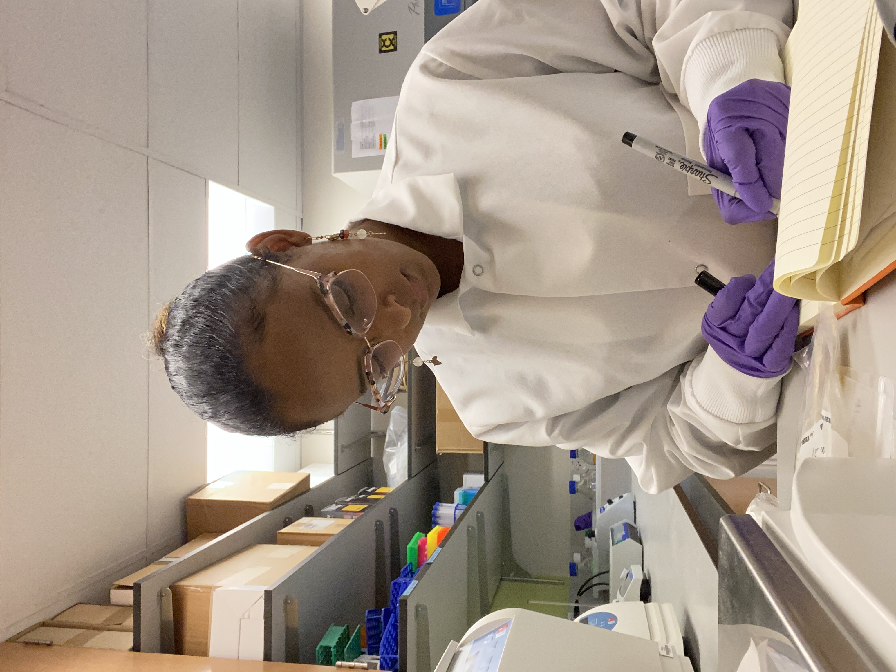

I am an archaeologist studying diet, health and burial practices in ancient East Africa. My aim is to understand how people experianced and navigated changes to the environment and their sociopolitical and economic systems. I use multiple archaeological approches including bioarchaeology, biomolecular methods, archival research, and community-centered research. My research has been funded by the National Science Foundation (2023 - 2025) and Wenner-Gren Foundation (2023-2025). Currently, I am the manager of community archives and collection-based educational programming at The Griot Museum of Black History. At the Griot Museum, I focuses on developing community accessiable archival collections and design educational events.